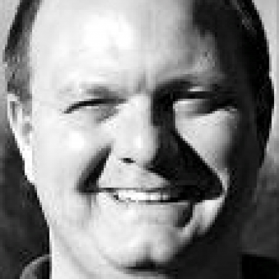
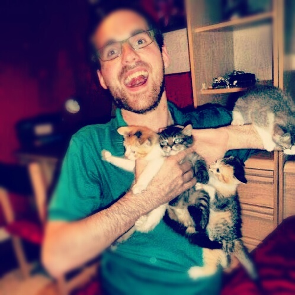

Apache CouchDB Conf Vancouver
November 13, 2013
The Future is Open and Distributed
Thanks to everyone in Apache CouchDB community – you guys made this event awesome.
Thanks to our sponsors for making this event possible.
Thanks to Carter Rabasa for including us in Vancouver Developer Week right next to CascadiaJS.
Enjoy the videos of the talks!
Videos
CouchDB everywhere with PouchDB - Dale Harvey, Mozilla
CouchDB Writ Large - Mike Miller, Cloudant
Replication, FTW! - Benjamin Young, Cloudant
10 Common Misconceptions about CouchDB - Joan Touzet, Atypical
Experiences using CouchDB inside Microsoft's Windows Azure team - Will Perry and Brian Benz
Deep Dive into a Shallow Write Pool - Jason Johnson, IBM SoftLayer
Say Hello to Fauxton, the New Web Dashboard for CouchDB - Russell Branca, Cloudant
Making CouchDB Plugins - Jason Smith, Nodejitsu
Personal Web Apps - Nathan Vander Wilt, freelance product developer
How CouchDB is powering the next-generation cloud storage - Sascha Reuter, doctape / tape.io GmbH
Open Data with Couch, Pouch, and Cloudant: Liberating the Laws of Massachusetts - Calvin Metcalf
War stories from npmjs.org - Charlie Robbins & Jason Smith, Nodejitsu
Agenda
| November 13, 2013 | |
|---|---|
| 8:30-9:30am | Breakfast & Registration |
| 9:30-9:45 | Welcome & Opening Remarks Mike Miller & Yuriy Dybskiy, Cloudant |
| 9:45-10:30 | Keynote: The State of CouchDB Jan Lehnardt |
| 10:30-10:45 | Break |
| 10:45-12:15pm | Morning Sessions |
| [Video] |
CouchDB everywhere with PouchDB Dale Harvey, Mozilla |
| [Video] | “CouchDB Writ Large” Mike Miller, Cloudant |
| [Video] |
Replication, FTW! Benjamin Young, Cloudant |
| 12:15-1:15 | Lunch |
| 1:15-3:15 | Afternoon Sessions, Part 1 |
| [Video] |
10 Common Misconceptions about CouchDB Joan Touzet, Atypical |
| [Video] |
Experiences using CouchDB inside Microsoft's Windows Azure team Will Perry, Microsoft & Brian Benz, Microsoft |
| [Video] |
Deep Dive into a Shallow Write Pool Jason Johnson, Softlayer |
| [Video] |
Say Hello to Fauxton Russell BrancaCloudant |
| 3:15-3:30 | Break |
| 3:30-5:30 | Afternoon Sessions, Part 2 |
| [Video] |
Making CouchDB Plugins Jason Smith, Nodejitsu |
| [Video] |
Personal Web Apps Nathan Vander Wilt |
| [Video] |
How CouchDB is powering the next-generation cloud storage Sascha Reuter, Doctape |
| [Video] |
Open Data with Couch, Pouch, and Cloudant: Liberating the Laws of Massachusetts Calvin Metcalf |
| [Video] |
War stories from npmjs.org Charlie Robbins & Jason Smith, Nodejitsu |
| 5:30-5:45 | Closing Remarks |
| 6:00-8:00 | Reception with CascadiaJS |
Speakers
-

Jan Lehnardt
HoodieDissatisfied with the status-quo.
@CouchDB • @jsconfeu • @hoodiehq
Duct tape artist. -

Dale Harvey
MozillaMozillian working on @Boot2Gecko, Author of @pouchdb, generally obsessed with web + open source geekery.
-

Jason Smith
NodejitsuNodejitsu CTO; Apache CouchDB committer
-

Will Perry
MicrosoftWill works at Microsoft on the Windows Azure Service Bus and is also GLEAM Co-Chair. Often found at the Pro Club in Bellevue or on Capitol Hill.
-

Jason Johnson
SoftLayerPython and Java hacker. R&D Software Engineer @softlayer
-
Sascha Reuter
DoctapeFounder & technical lead @doctapers. In love with #life and all things #nodejs, #couchdb, #wakeboarding. Also organizer of @tapeup meetup. Stay dedicated!
-
Joan Touzet
AtypicalLiving-type person. atypical.net
-

Brian Benz
MicrosoftSenior Technical Evangelist for Microsoft Open Technologies, Inc., a subsidiary of Microsoft Corporation.
-
Nathan Vander Wilt
n.exts.chcode, read, pray
-

Calvin Metcalf
calvinmetcalf.comJavaScript and Maps (in that order)
-
Benjamin Young
CloudantWeb manufacturer and inventor - I (heart) @couchdb, open source, open communities. I organize @RESTFest & @OpenUpstate.
Organizers
-
Jan Lehnardt
HoodieDissatisfied with the status-quo.
@CouchDB • @jsconfeu • @hoodiehq
-
Noah Slater
Engine YardCouchDB guy, Apache member, &c.
-

Sara Strope
CloudantProduces events @Cloudant. Avid triathlete and entrepreneur @shareiceapp
-

Yuriy Dybskiy
CloudantMath grad / Front-end engineer / Cyclist / Tango Dancer
Developer Advocate @Cloudant
Sponsors
CouchDB Conf would not be possible without the following awesome companies:
Gold Sponsors
Community Sponsors
Media Sponsors
Previous Event
CouchDB Conf Berlin January 2013